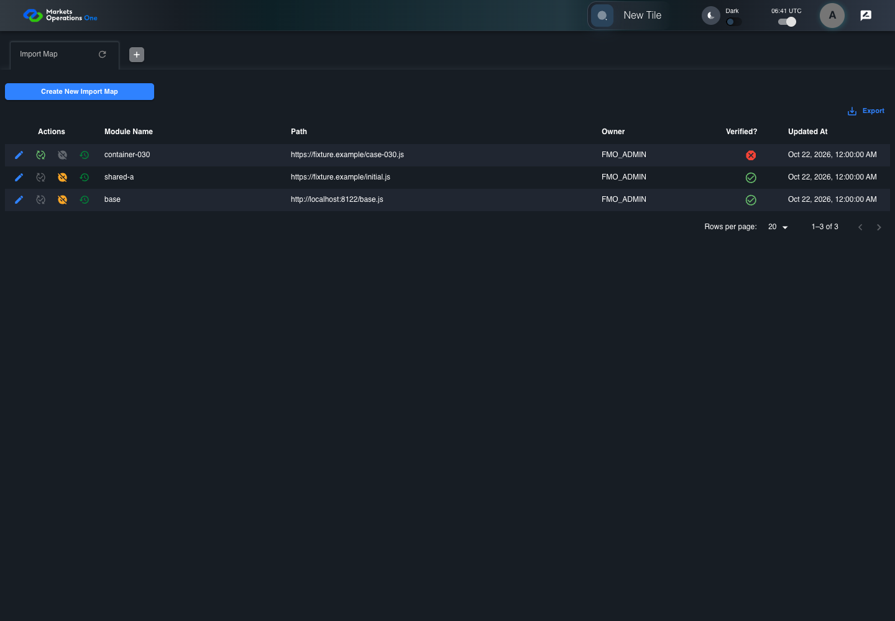
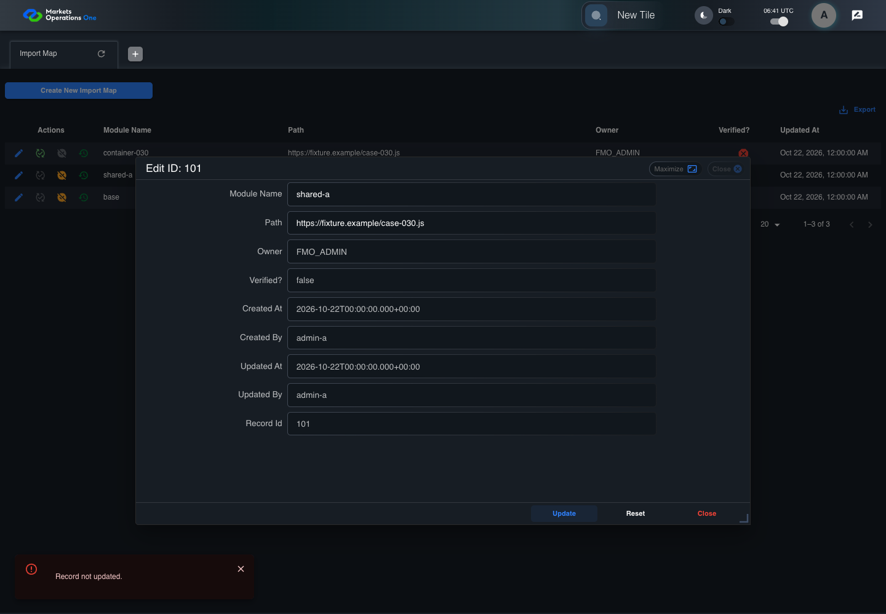

BFF-ADM-030 current BFF administration through actual UI
PASS · application/run-072/bff-adm-030-current-bff-administration-through-actual-ui-c4c211531f7f-attempt-1 · ACTUAL_APPLICATION_LOCAL_SERVICES
Actual current React and exact-current BFF admin controllers/services/JPA with actual migration DDL in disposable PostgreSQL. Controlled OUD/EMS2 identities and local Spring bootstrap. Fixture SQL seeds/mutates isolated records; service errors are actual database errors. Undefined agreed messages remain unresolved acceptance.
2026-10-22T06:41:50.294Z to 2026-10-22T06:41:56.846Z
Assertions and result · Artifact manifest · Exact run inputs and source hashes
Result SHA-256:a1347e4c7c99e0ac452bf8c74303f81cdffeaa089a4fc8aed2b430c2a3cd7c11Machine observations
- actual-identity-projection.json
5194b9cae92610ebc363de92ce412e4e9e05ba3e4ccf4b40b4847d1d522849de - baseline-inputs.json
00b2e3b6762ec18090dbffad879d1b26a56b81c10275f4ff694694ebe23b8079 - bff-boundary.json
72e919b9aabf156f97d5d21f0a2dd91d38139914af1f27fa9eddc51ad4332a46 - committed-ui-submission-comparisons.json
d6a9147ebe68e1b780e04e0f5e33552da1909be9af806913131063aeb50d8d06 - existing-duplicate-fixture.json
621e19ed7eff273fa832937a4dcefc14e63bd21c796f442ebf02c346fc33ce27 - fixture-step-4.json
0028a940358bf0c1ec89d72cedad08e7f92e4ac64074259d6b43699acaba08d3 - fixture-step-5.json
39086888f82983bada57a9e431dadbe3bc2f0661e76817bd6fbc3ee143224ee5 - initial-persisted-records.json
ff2d1bc5e6c3061e3f4cec979c9bf33dfca49be096964d1864e4d79b0a57e0b3 - persisted-after-submit.json
5c4e432a56e4bbffd73f16d4ab2c84620f9f4bd8dcd850b8b5a098ffacd45578 - ui-origin-bff-requests.json
35c5b2c3d7c4fcc8fd4ae77a354400bf87ba2b19a69fd8eeb5b5d8a27eb180ea
Screenshot capture: CAPTURED. Named frames: 14.
Step screenshot bindings: COMPLETE. 13/13 canonical steps have execution screenshots.
Bindings measure structural coverage only. They do not establish screenshot content quality or relevance.
Screenshot content review: NOT_REVIEWED. Recorded context: 0/14 frames. Identical image bytes: 7 repeated frames. Recorded context does not establish human visual review.
Canonical step timeline
Given Admin A uses subject "admin-a" with role "FMO_ADMIN" in an isolated authenticated browser
Execution: PASSED.
1. step-01 Visible state after step 1: Given Admin A uses subject "admin-a" with role "FMO_ADMIN" in an isolated authenticated browser
2026-10-22T06:41:53.390Z · 1440×1000
Step: /Users/lushevol/code/github/ratan-release-impact/workbench/tasks/ui-test-coverage-20261022/test-cases.md:15951
SHA-256:32216bad004b776be337e97e20c2ebfaae09f4e1f7801d70f9f948afa0a15265And the controlled Import Map fixture records the initial grid rows and persisted values
Execution: PASSED.
2. step-02 Visible state after step 2: And the controlled Import Map fixture records the initial grid rows and persisted values
2026-10-22T06:41:53.554Z · 1440×1000
Step: /Users/lushevol/code/github/ratan-release-impact/workbench/tasks/ui-test-coverage-20261022/test-cases.md:15952
SHA-256:32216bad004b776be337e97e20c2ebfaae09f4e1f7801d70f9f948afa0a15265Image bytes match frame 1. An unchanged image can be valid for consecutive assertions. This match does not establish correct step content.
And the Import Map grid has record "101" owned by "FMO_ADMIN"
Execution: PASSED.
3. step-03 Visible state after step 3: And the Import Map grid has record "101" owned by "FMO_ADMIN"
2026-10-22T06:41:53.636Z · 1440×1000
Step: /Users/lushevol/code/github/ratan-release-impact/workbench/tasks/ui-test-coverage-20261022/test-cases.md:15953
SHA-256:32216bad004b776be337e97e20c2ebfaae09f4e1f7801d70f9f948afa0a15265Image bytes match frame 2. An unchanged image can be valid for consecutive assertions. This match does not establish correct step content.
And the baseline fixture data defines "Module Name" as "container-030"
Execution: PASSED.
4. step-04 Visible state after step 4: And the baseline fixture data defines "Module Name" as "container-030"
2026-10-22T06:41:53.704Z · 1440×1000
Step: /Users/lushevol/code/github/ratan-release-impact/workbench/tasks/ui-test-coverage-20261022/test-cases.md:15954
SHA-256:32216bad004b776be337e97e20c2ebfaae09f4e1f7801d70f9f948afa0a15265Image bytes match frame 3. An unchanged image can be valid for consecutive assertions. This match does not establish correct step content.
And the baseline fixture data defines "Path" as "https://fixture.example/case-030.js"
Execution: PASSED.
5. step-05 Visible state after step 5: And the baseline fixture data defines "Path" as "https://fixture.example/case-030.js"
2026-10-22T06:41:53.787Z · 1440×1000
Step: /Users/lushevol/code/github/ratan-release-impact/workbench/tasks/ui-test-coverage-20261022/test-cases.md:15955
SHA-256:32216bad004b776be337e97e20c2ebfaae09f4e1f7801d70f9f948afa0a15265Image bytes match frame 4. An unchanged image can be valid for consecutive assertions. This match does not establish correct step content.
And Import Map record "102" already uses "shared-a"
Execution: PASSED.
6. step-06 Visible state after step 6: And Import Map record "102" already uses "shared-a"
2026-10-22T06:41:53.855Z · 1440×1000
Step: /Users/lushevol/code/github/ratan-release-impact/workbench/tasks/ui-test-coverage-20261022/test-cases.md:15956
SHA-256:32216bad004b776be337e97e20c2ebfaae09f4e1f7801d70f9f948afa0a15265Image bytes match frame 5. An unchanged image can be valid for consecutive assertions. This match does not establish correct step content.
When Admin A clicks the button labeled "Edit" in the Import Map grid row with "Record Id" "101"
Execution: PASSED.7. step-07 Visible state after step 7: When Admin A clicks the button labeled "Edit" in the Import Map grid row with "Record Id" "101"
2026-10-22T06:41:54.185Z · 1440×1000
Step: /Users/lushevol/code/github/ratan-release-impact/workbench/tasks/ui-test-coverage-20261022/test-cases.md:15957
SHA-256:40a3d2d85fa2881fc1b10cb20c0b4ed01e9b2f779e30f3434d32f34dfa63e23cThen the dialog titled "edit ID: 101" is visible on the Import Map administration page
Execution: PASSED.8. step-08 Visible state after step 8: Then the dialog titled "edit ID: 101" is visible on the Import Map administration page
2026-10-22T06:41:54.264Z · 1440×1000
Step: /Users/lushevol/code/github/ratan-release-impact/workbench/tasks/ui-test-coverage-20261022/test-cases.md:15958
SHA-256:4bbe58fd7eb7b918168aae86291269f8a559dbac69663bb71c327afa3894750bWhen Admin A fills the textbox labeled "Module Name" with "shared-a" in dialog "edit ID: 101"
Execution: PASSED.9. step-09 Visible state after step 9: When Admin A fills the textbox labeled "Module Name" with "shared-a" in dialog "edit ID: 101"
2026-10-22T06:41:54.730Z · 1440×1000
Step: /Users/lushevol/code/github/ratan-release-impact/workbench/tasks/ui-test-coverage-20261022/test-cases.md:15959
SHA-256:3457d0c1e82f198a03454ecc2fe6ed8513258ac0f97572f0d0b6742a675a39ccAnd Admin A fills the textbox labeled "Path" with "https://fixture.example/case-030.js" in dialog "edit ID: 101"
Execution: PASSED.10. step-10 Visible state after step 10: And Admin A fills the textbox labeled "Path" with "https://fixture.example/case-030.js" in dialog "edit ID: 101"
2026-10-22T06:41:55.173Z · 1440×1000
Step: /Users/lushevol/code/github/ratan-release-impact/workbench/tasks/ui-test-coverage-20261022/test-cases.md:15960
SHA-256:2580d3fcafdf47993584659a19956299fde25bd43772a6912db718b9fcc8e38bAnd Admin A clicks the button labeled "Update" in dialog "edit ID: 101"
Execution: PASSED.
11. step-11 Visible state after step 11: And Admin A clicks the button labeled "Update" in dialog "edit ID: 101"
2026-10-22T06:41:55.486Z · 1440×1000
Step: /Users/lushevol/code/github/ratan-release-impact/workbench/tasks/ui-test-coverage-20261022/test-cases.md:15961
SHA-256:694fd6401e18b0823b11ece58323f316821e3485d31ac2e0feb814ea8d8274a0Then the alert with severity "error" in the portal snackbar contains the exact text "Record not updated."
Execution: PASSED.
12. step-12 Visible state after step 12: Then the alert with severity "error" in the portal snackbar contains the exact text "Record not updated."
2026-10-22T06:41:55.583Z · 1440×1000
Step: /Users/lushevol/code/github/ratan-release-impact/workbench/tasks/ui-test-coverage-20261022/test-cases.md:15962
SHA-256:ff624a15e13534fcf56b663ec4389938347e56b24f95967d67fc7a4b23ce4aa0And the Import Map data grid with column "Record Id" row identifiers and loaded field values equal the initial grid snapshot on the Import Map administration page
Execution: PASSED.
13. step-13 Visible state after step 13: And the Import Map data grid with column "Record Id" row identifiers and loaded field values equal the initial grid snapshot on the Import Map administration page
2026-10-22T06:41:55.754Z · 1440×1000
Step: /Users/lushevol/code/github/ratan-release-impact/workbench/tasks/ui-test-coverage-20261022/test-cases.md:15963
SHA-256:ff624a15e13534fcf56b663ec4389938347e56b24f95967d67fc7a4b23ce4aa0Image bytes match frame 12. An unchanged image can be valid for consecutive assertions. This match does not establish correct step content.
Additional named frames
The final visible state after the named test assertions.
2026-10-22T06:41:55.885Z · 1440×1000Step: Test source: /Users/lushevol/code/github/ratan-release-impact/workbench/e2e/audit-specs/bff-admin.spec.ts:11
SHA-256:
ff624a15e13534fcf56b663ec4389938347e56b24f95967d67fc7a4b23ce4aa0Image bytes match frame 13. An unchanged image can be valid for consecutive assertions. This match does not establish correct step content.
Screenshots establish visible state only. Assertions and traces support functional claims.